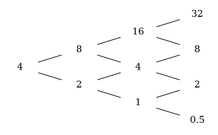

Exercise 1.1
Assume in one-period binomial market of Section 1.1 that both H and T have positive probability of occuring. Show that condition (1.1.2) precludes arbitrage. In other words, show that if \(X_0=0\) and \(X_1=\Delta_0 S_1 + (1+r)(X_0-\Delta_0 S_0)\) then we cannot have \(X_1\) strictly positive with positive probability unless \(X_1\) is strictly negative with positive probability as well, and this is the case regardless of the choice of the number \(\Delta_0\).
Answer:
The condition (1.1.2) is given by:
In the one-period binomial model, to rule out arbitrage we must assume \(0 < d < 1+r < u\).
Arbitrage is a trading strategy that involves no initial investment and has a positive probability of making a profit.
Let’s assume that \(X_0=0\) and \(X_1=\Delta_0 S_1 + (1+r)(X_0-\Delta_0 S_0)\) for two possible states of the world \(H\) and \(T\). We have:
\[ \begin{aligned} \begin{cases} X_1(H) &= \Delta_0 S_1(H) + (1+r)(X_0-\Delta_0 S_0(H)) \\ X_1(T) &= \Delta_0 S_1(T) + (1+r)(X_0-\Delta_0 S_0(T)) \end{cases}\\ &\Rightarrow \begin{cases} X_1(H) &= \Delta_0 u S_0 + (1+r)(X_0-\Delta_0 S_0) \\ X_1(T) &= \Delta_0 d S_0 + (1+r)(X_0-\Delta_0 S_0) \end{cases}\\ &\Rightarrow \begin{cases} \Delta_{0} = \frac{X_1(H) - (1+r)X_0}{uS_0 - (1+r)S_0} \\ X_1(T) = \frac{X_1(H) - (1+r)X_0}{uS_0 - (1+r)S_0} d S_0 + (1+r)(X_0-\frac{X_1(H) - (1+r)X_0}{uS_0 - (1+r)S_0} S_0) \end{cases}\\ &\Rightarrow X_1(T) = \frac{X_1(H) - (1+r)X_0}{u - (1+r)} d + (1+r)(X_0-\frac{X_1(H) - (1+r)X_0}{u - (1+r)})\\ &\Rightarrow X_1(T)(u-1-r) = dX_1(H) - (1+r)dX_0 - X_1(H) + (1+r)(u-1-r)X_0 - (1+r)X_1(H) + (1+r)^2 X_0\\ &\Rightarrow X_1(T)(u-1-r) = (d - 1 - r)X_1(H) + (1+r)(-d+u-1-r+1+r)X_0\\ &\Rightarrow X_1(T)(u-1-r) = (d - 1 - r)X_1(H) + (1+r)(u-d)X_0\\ &\Rightarrow 0 = X_0 = \frac{1}{1+r}[\frac{u-1-r}{u-d}X_1(T)+\frac{1+r-d}{u-d}X_1(H)]\\ &\Rightarrow 0 = X_0 = (u-1-r)X_1(T)+(1+r-d)X_1(H)]\\ \end{aligned} \] From condition 1.1.2, we have \(0 < d < 1+r < u\). This implies that \(u-1-r > 0\) and \(1+r-d > 0\). Therefore, if \(X_1(T) > 0\) then \(X_1(H) < 0\) and vice versa. This shows that if \(X_1\) is strictly positive with positive probability, then \(X_1\) is strictly negative with positive probability as well.
Hence the condition (1.1.2) precludes arbitrage.
Exercise 1.2
Suppose in in the situation of Example 1.1.1 that the option sells for 1.20 at time zero. Consider an agent who begins with wealth \(X_0=0\) and at time zero buys \(\Delta_0\) shares of a stock and \(\Gamma_0\) options. The numbers \(\Delta_0\) and \(\Gamma_0\) can be either positive or negative or zero. This leaves the agent with a cash position of \(-4\Delta_0-1.20\Gamma_0\). If this is positive, it is invested in the money market; if it is negative, it represents money borrowed from the money market. At time one, the value of the agent’s portfolio of stock, option, and money market assets is
\[ X_1=\Delta_0 S_1 +\Gamma_0 (S_1-5)^{+} -\frac{5}{4}(4\Delta_0+1.20\Gamma_0) \]
Assume that both H and T have positive probability of occuring. Show that if there is a positive probability that \(X_1\) is positive, then there is a positive probability that \(X_1\) is negative. In other words, one cannot find an arbitrage when time-zero price of the option is 1.20.
Answer:
From the example, we know the following: \(S_0=4\), \(S_1(H)=8\), \(S_1(T)=2\), \(r=\frac{1}{4}\), \(u=2\), \(d=\frac{1}{2}\), and \(X_0=0\).
The value of the agent’s portfolio at time one is given by for two possible states of the world \(H\) and \(T\):
\[ \begin{aligned} \begin{cases} X_1(H) &= \Delta_0 S_1(H) +\Gamma_0 (S_1(H)-5)^{+} -\frac{5}{4}(4\Delta_0+1.20\Gamma_0) \\ X_1(T) &= \Delta_0 S_1(T) +\Gamma_0 (S_1(T)-5)^{+} -\frac{5}{4}(4\Delta_0+1.20\Gamma_0) \end{cases}\\ &\Rightarrow \begin{cases} X_1(H) &= \Delta_0 8 +\Gamma_0 (8-5)^{+} -\frac{5}{4}(4\Delta_0+1.20\Gamma_0) \\ X_1(T) &= \Delta_0 2 +\Gamma_0 (2-5)^{+} -\frac{5}{4}(4\Delta_0+1.20\Gamma_0) \end{cases}\\ &\Rightarrow \begin{cases} X_1(H) &= 8\Delta_0 +\Gamma_0 (3) -5\Delta_0-\frac{3}{2}\Gamma_0) \\ X_1(T) &= 2\Delta_0 +\Gamma_0 (0) -5\Delta_0-\frac{3}{2}\Gamma_0) \end{cases}\\ &\Rightarrow \begin{cases} X_1(H) &= 3\Delta_0 +\frac{3}{2}\Gamma_0 \\ X_1(T) &= -3\Delta_0 -\frac{3}{2}\Gamma_0 \end{cases} \end{aligned} \]
If there is a positive probability that \(X_1\) is positive, then there is a positive probability that \(X_1\) is negative. This is because if \(X_1(H) > 0\) then \(X_1(T) < 0\) and vice versa. This shows that if \(X_1\) is strictly positive with positive probability, then \(X_1\) is strictly negative with positive probability as well.
Hence, one cannot find an arbitrage when the time-zero price of the option is 1.20.
Exercise 1.3
In the one-period binomial model of Section 1 . 1 , suppose we want to determine the price at time zero of the derivative security \(V_1=S_1\) (i.e., the derivative security pays off the stock price.) (This can be regarded as a European call with strike price K = 0 ) . What is the time-zero price \(V_0\) given by the risk-neutral pricing formula (1.1.10)?
Answer:
The risk-neutral pricing formula is given by:
\[ V_0 = \frac{1}{1+r} [\tilde{p}V_1(H) + \tilde{q}V_1(T)] \]
where \(\tilde{p} = \frac{1+r-d}{u-d}\) and \(\tilde{q} = \frac{u-1-r}{u-d}\).
In this case, we have \(V_1(H) = S_1(H) = uS_0\) and \(V_1(T) = S_1(T) = dS_0\). Therefore, the time-zero price \(V_0\) is given by:
\[ \begin{aligned} V_0 &= \frac{1}{1+r} [\tilde{p}V_1(H) + \tilde{q}V_1(T)] \\ &= \frac{1}{1+r} [\tilde{p}uS_0 + \tilde{q}dS_0] \\ &= \frac{1}{1+r} [\frac{1+r-d}{u-d}uS_0 + \frac{u-1-r}{u-d}dS_0] \\ &= \frac{S_0}{1+r} [\frac{u+ur-du+ud-d-dr}{u-d}] \\ &= \frac{S_0}{1+r} [\frac{u-d+(u-d)r}{u-d}] \\ &= \frac{S_0}{1+r} [1+r] \\ &= S_0 \end{aligned} \] ## Exercise 1.4.
In the proof of Theorem 1.2.2, show under the induction hypothesis that \[X_{n+1}(\omega_1\omega_2...\omega_nT)=V_{n+!}(\omega_1\omega_2...\omega_nT)\].
Answer:
\[ \begin{aligned} X_{n+1}(T) &= \Delta_n d S_{n} + (1+r)(X_n - \Delta_n S_n)\\ &= (1+r)X_n + \Delta_n S_n (d - (1+r))\\ &= (1+r)V_n + \Delta_n S_n (d - (1+r))\quad [induction \ hypothesis]\\ &= (1+r)V_n + [\frac{V_{n+1}(H)-V_{n+1}(T)}{(u-d)S_{n}}] S_n (d - (1+r))\\ &= (1+r)V_n + [\frac{V_{n+1}(T)-V_{n+1}(H)}{u-d}] (1+r - d)\\ &= (1+r)V_n +\tilde{p}V_{n+1}(T) - \tilde{p}V_{n+1}(H)\\ &= \tilde{p}V_{n+1}(H) + \tilde{q}V_{n+1}(T) + \tilde{p}V_{n+1}(T) - \tilde{p}V_{n+1}(H)\\ &= [\tilde{p}+\tilde{q}]V_{n+1}(T)\\ &= V_{n+1}(T) \end{aligned} \]
Exercise 1.5
In example 1.2.4, we considered an agent who sold the lookback option for \(V_0=1.376\) and bought \(\Delta_0=0.1733\) shares of stock at time zero. At time one, if the stock goes up, she has a portfolio valued at \(V_1(H)=2.24\). Assume that she now takes a position of \(\Delta_1(H)=\frac{V_2(HH)-V_2(HT)}{S_2(HH)-S_2(HT)}\) in the stock. Show that, at time two, if the stock goes up again, she will have a portfolio valued at \(V_2(HH) = 3.20\), whereas if the stock goes down, her portfolio will be worth \(V_2(HT)=2.40\). Finally, under the assumption that the stock goes up in the first period and down in the second period, assume the agent takes the position \(\Delta_2(HT)=\frac{V_3(HTH)-V_3(HTT)}{S_{3}(HTH)-S_3(HTT)}\) in the stock. Show that at time three, if the stock goes up, she will have a portfolio valued at $V_3(HTH)= 0 $, whereas if the stock goes down, her portfolio will be worth \(V_3(HTT)=6\). In other words, she has hedged her short position in the option.
Answer: The exercise is almost solved in the book. We have the following data:
\(S_0 =4\), \(u=2\), \(d=\frac{1}{2}\), \(r=\frac{1}{4}\), \(\tilde{p}=\tilde{q}=\frac{1}{2}\), and \(V_{3}=max_{0\leq n \leq 3} S_n - S_3\).
THe stock price tree over the three periods is given below:
Determining the option value backward in time, we have:
\[ \begin{array}{ccccc} V_3(HHH) &= S_3(HHH) - S_3(HHH) &= 32 - 32 &= 0\\ V_3(HHT) &= S_2(HH) - S_3(HHT) &= 16 - 8 &= 8\\ V_3(HTH) &= S_1(H) - S_3(HTH) &= 8 - 8 &= 0\\ V_3(HTT) &= S_1(H) - S_3(HTT) &= 8 - 2 &= 6\\ V_3(THH) &= S_3(THH) - S_3(THH) &= 8 - 8 &= 0\\ V_3(THT) &= S_2(TH) - S_3(THT) &= 4 - 2 &= 2\\ V_3(TTH) &= S_0 - S_3(TTH) &= 4 - 2 &= 2\\ V_3(TTT) &= S_0 - S_3(TTT) &= 4 - \frac{1}{2} &= \frac{7}{2}\\ \end{array} \]
For the other periods, we use the backward recursion formula:
\[ \begin{aligned} V_2(HH) &= \frac{1}{1+r}[\tilde{p}V_3(HHH) + \tilde{q}V_3(HHT)]\\ &= \frac{1}{1+\frac{1}{4}}[\frac{1}{2}V_3(HHH) + \frac{1}{2}V_3(HHT)]\\ &= \frac{1}{\frac{5}{4}}[\frac{1}{2}0 + \frac{1}{2}8]\\ &= \frac{4}{5} \times 4 = \frac{16}{5} = 3.2\\ V_2(HT) &= \frac{1}{1+r}[\tilde{p}V_3(HTH) + \tilde{q}V_3(HTT)]\\ &= \frac{1}{1+\frac{1}{4}}[\frac{1}{2}V_3(HTH) + \frac{1}{2}V_3(HTT)]\\ &= \frac{1}{\frac{5}{4}}[\frac{1}{2}0 + \frac{1}{2}6]\\ &= \frac{4}{5} \times 3 = \frac{12}{5} = 2.4\\ V_2(TH) &= \frac{1}{1+r}[\tilde{p}V_3(THH) + \tilde{q}V_3(THT)]\\ &= \frac{1}{1+\frac{1}{4}}[\frac{1}{2}V_3(THH) + \frac{1}{2}V_3(THT)]\\ &= \frac{1}{\frac{5}{4}}[\frac{1}{2}0 + \frac{1}{2}2]\\ &= \frac{4}{5} \times 1 = \frac{4}{5} = 0.8\\ V_2(TT) &= \frac{1}{1+r}[\tilde{p}V_3(TTH) + \tilde{q}V_3(TTT)]\\ &= \frac{1}{1+\frac{1}{4}}[\frac{1}{2}V_3(TTH) + \frac{1}{2}V_3(TTT)]\\ &= \frac{1}{\frac{5}{4}}[\frac{1}{2}2 + \frac{1}{2}\frac{7}{2}]\\ &= \frac{4}{5} \times \frac{11}{4} = \frac{11}{5} = 2.2\\ \end{aligned} \]
And in period 1:
\[ \begin{aligned} V_1(H) &= \frac{1}{1+r}\left[\tilde{p}V_2(HH) + \tilde{q}V_2(HT)\right] \ &= \frac{1}{1+\frac{1}{4}}\left[\frac{1}{2}V_2(HH) + \frac{1}{2}V_2(HT)\right] \ &= \frac{1}{\frac{5}{4}}\left[\frac{1}{2} \cdot \frac{16}{5} + \frac{1}{2} \cdot \frac{12}{5}\right] \ &= \frac{4}{5} \times \frac{14}{5} = \frac{56}{25} = 2.24 \[1.5em] V_1(T) &= \frac{1}{1+r}\left[\tilde{p}V_2(TH) + \tilde{q}V_2(TT)\right] \ &= \frac{1}{1+\frac{1}{4}}\left[\frac{1}{2}V_2(TH) + \frac{1}{2}V_2(TT)\right] \ &= \frac{1}{\frac{5}{4}}\left[\frac{1}{2} \cdot \frac{4}{5} + \frac{1}{2} \cdot \frac{11}{5}\right] \ &= \frac{4}{5} \times \frac{15}{10} = \frac{6}{5} = 1.2 \ \end{aligned} \]
Finally, in period 0:
\[ \begin{aligned} V_0 &= \frac{1}{1+r}[\tilde{p}V_1(H) + \tilde{q}V_1(T)]\\ &= \frac{1}{1+\frac{1}{4}}[\frac{1}{2}V_1(H) + \frac{1}{2}V_1(T)]\\ &= \frac{1}{\frac{5}{4}}[\frac{1}{2}2.24 + \frac{1}{2}1.2]\\ &= \frac{4}{5} \times \frac{8.6}{5} = \frac{34.4}{25} = 1.376\\ \end{aligned} \]
From the above, we can see that the agent has hedged her short position in the option.
Exercise 1.6 (Hedging a long position-one period).
Consider a bank that has a long position in the European call written on the stock price in Figure 1.1.2. The call expires at time one and has strike price K = 5. In Section 1.1, we determined the time-zero price of this call to be V0 = 1.20. At time zero, the bank owns this option, which ties up capital V0 = 1.20. The bank wants to earn the interest rate 25% on this capital until time one (i.e., without investing any more money, and regardless of how the coin tossing turns out, the bank wants to have
\[\frac{5}{4}.1.20=1.50\] at time one, after collecting the payoff from the option (if any) at time one). Specify how the bank’s trader should invest in the stock and money markets to accomplish this.
Answer:
The bank’s trader should set up a portfolio whose value negates the payoff of the option at time one. This is done by solving the equation:
\[ (1+r)(X_0-\Delta_0 S_0) + \Delta_0 S_1 = -(S_1 - K)^{+} \] With a space of states of the world \(H\) and \(T\), we have:
\[ \begin{aligned} \begin{cases} (1+r)(X_0-\Delta_0 S_0) + \Delta_0 S_1(H) &= -(S_1(H) - K)^{+} \\ (1+r)(X_0-\Delta_0 S_0) + \Delta_0 S_1(T) &= -(S_1(T) - K)^{+} \end{cases}\\ &\Rightarrow \begin{cases} (1+\frac{1}{4})(X_0-\Delta_0 4) + \Delta_0 8 &= -(8 - 5)^{+} \\ (1+\frac{1}{4})(X_0-\Delta_0 4) + \Delta_0 2 &= -(2 - 5)^{+} \end{cases}\\ &\Rightarrow \begin{cases} \frac{5}{4}X_0 - 5\Delta_0 + 8\Delta_0 &= -3 \\ \frac{5}{4}X_0 - 5\Delta_0 + 2\Delta_0 &= 0 \end{cases}\\ &\Rightarrow \begin{cases} \frac{5}{4}X_0 + 3\Delta_0 &= -3 \\ \frac{5}{4}X_0 - 3\Delta_0 &= 0 \end{cases}\\ &\Rightarrow \begin{cases} X_0 &= -\frac{6}{5}=-1.2\\ \Delta_0 &= -\frac{1}{2}=-0.5 \end{cases} \end{aligned} \]
Therefore, the bank’s trader should invest in the stock and money markets by short selling 0.5 shares of stock at time zero, which will provide him with the capital of \(0.5\times S_0=0.5\times 4=2\). Then, the bank’s trader should invest \(2-1.2=0.8\) in the money market to hedge the risk related to the long call position on the European option, and put in a different money market account the remaining capital of \(1.2\) to earn the interest rate of 25% until time one.
Exercise 1.7 (Hedging a long position-multiple periods).
Consider a bank that has a long position in the lookback option of Example 1.2.4. The bank intends to hold this option until expiration and receive the payoff \(V_3\) . At time zero, the bank has capital \(V_0 = 1.376\) tied up in the option and wants to earn the interest rate of \(25\%\) on this capital until time three (i.e., without investing any more money, and regardless of how the coin tossing turns out, the bank wants to have
\[(\frac{5}{4})^{3}.1.376=2.6875\]
at time three, after collecting the payoff from the lookback option at time three). Specify how the bank’s trader should invest in the stock and the money market account to accomplish this.
Answer:
Like in the preceding exercise, the bank’s trader should set up a portfolio whose value negates the payoff of the option at time three. This is done by short selling the stock in quantity \(\Delta_0 =\frac{V_(H)-V_1(T)}{S_1(H)-S_1(T)}=\frac{2.24-1.20}{8-2}=0.1733\). This will provide the trader with the capital of \(0.1733\times V_0=0.1733 \times 4 = 0.6932\). Then, the bank’s trader should invest(borrowing) \(0.6932-1.376=-0.6828\) in the money market to hedge the risk related to the long call position on the European option, and put in a different money market account the obtained capital of \(1.376\) to earn the interest rate of 25% until time three.
Exercise 1.8 (Asian option).
Consider the three-period model of Example 1.2.1, with \(S_0 = 4\), \(u = 2\), \(d = \frac{1}{2}\) and take the interest rate \(r = \frac{1}{4}\), so that \(\tilde{p}=\tilde{q}=\frac{1}{2}\) - For \(n = 0, 1, 2, 3\), define \(Y_{n} = \sum_{k=0}^{n}S_{k}\) to be the sum of the stock prices between times zero and n. Consider an Asian call option that expires at time three and has strike \(K = 4\) (i.e., whose payoff at time three is \((\frac{1}{4}Y_3 - 4)^{+})\). This is like a European call, except the payoff of the option is based on the average stock price rather than the final stock price. Let \(v_{n} (s, y)\) denote the price of this option at time \(n\) if \(S_n = s\) and \(Y_n = y\). In particular, \(v_3 (s, y) = (\frac{1}{4}y - 4)^{+}\).
Develop an algorithm for computing \(v_{n}\) recursively. In particular, write a formula for \(v_n\) in terms of \(v_{n+1}\).
Apply the algorithm developed in (i) to compute \(v_0(4, 4)\) , the price of the Asian option at time zero.
Provide a formula for \(\delta_{n} ( s, y )\) , the number of shares of stock that should be held by the replicating portfolio at time \(n\) if \(S_n = s\) and \(Y_n = y\)
Answer: